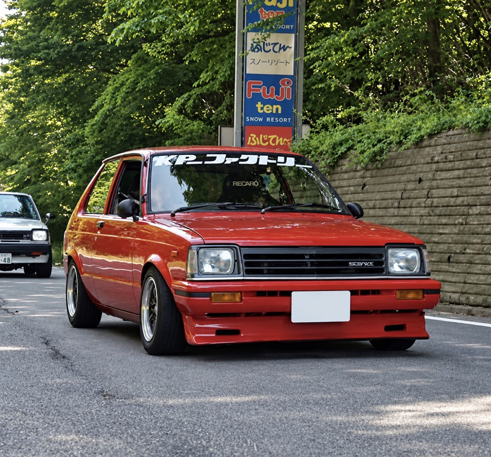
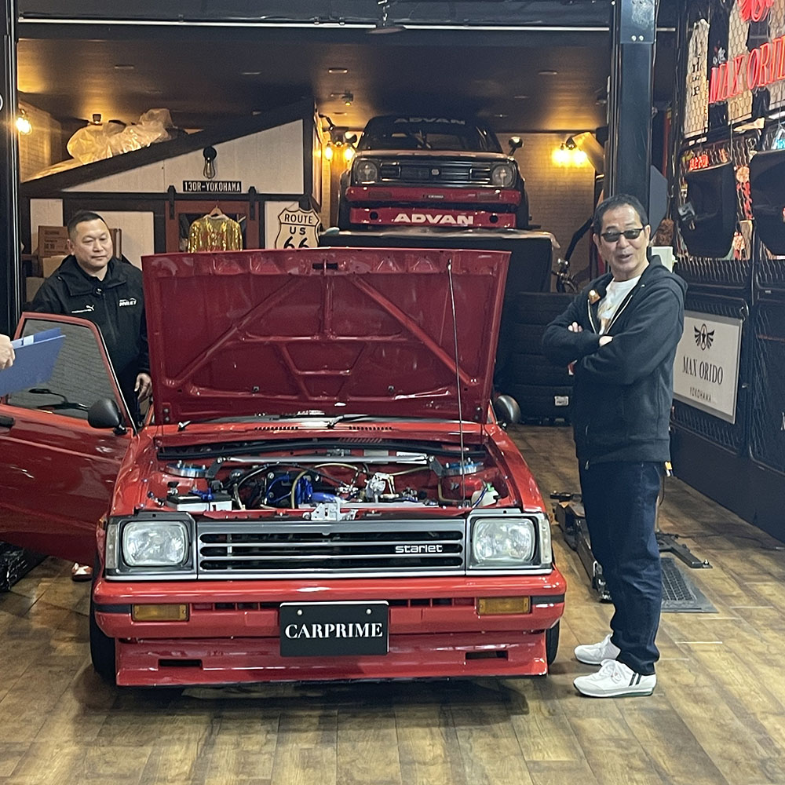
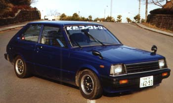
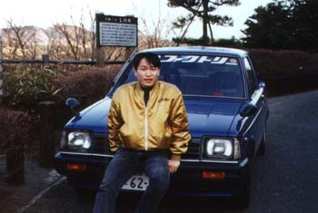
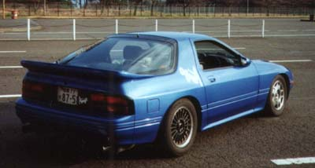

入江
プロフィール
何かひとこと書きましょう| Car Specs : 現在の車名、TUNE DATA を記載 |


ー 軌跡 ー
| Car Specs : 4K改 4K-Uピストン＋レーザーヘッド＋ノーマルガスケット2枚（鬼ハイコンプ），70度加工カム，TRDバルブスプリング，ソレックス40＋ハラダインマニ，フジツボタコ足＋フジツボマフラー，フロントTRDガスショック＋5.1kg/mm，リアTRDオイルショック＋4.2kg/mm，ビタローニ，有り合わせの残り物パーツで作ったワリには速かったよ |


